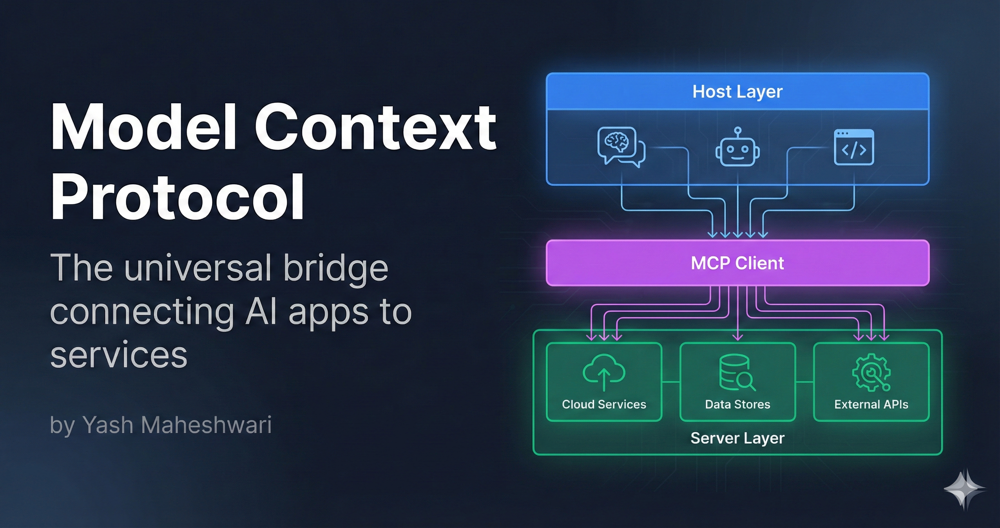
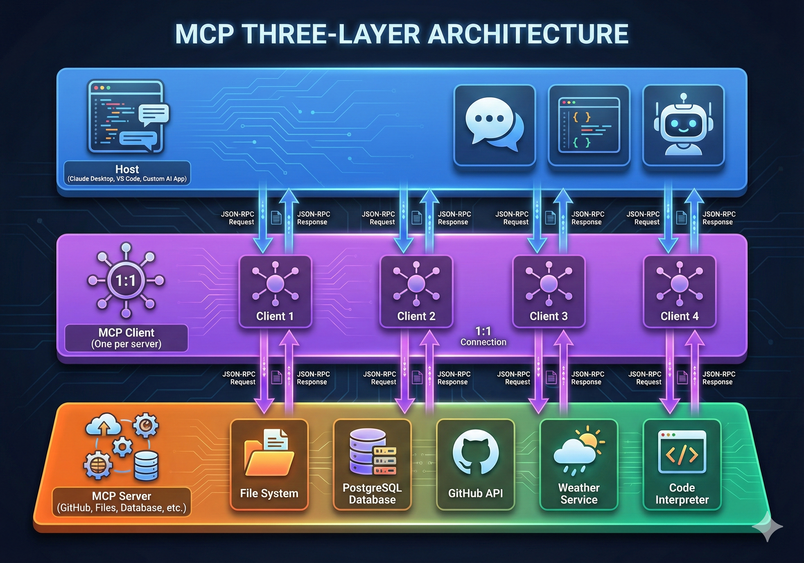
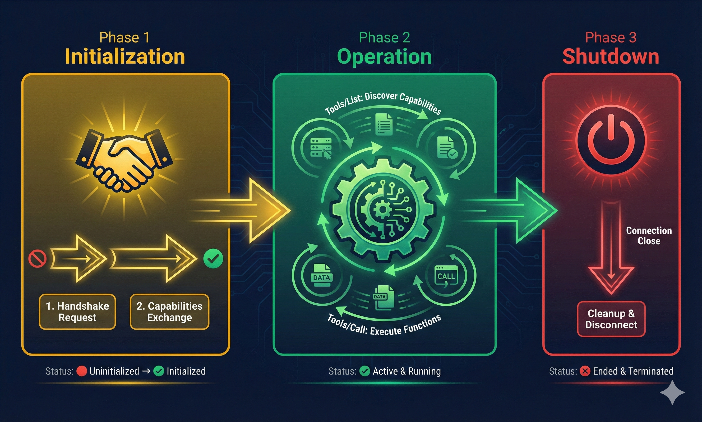
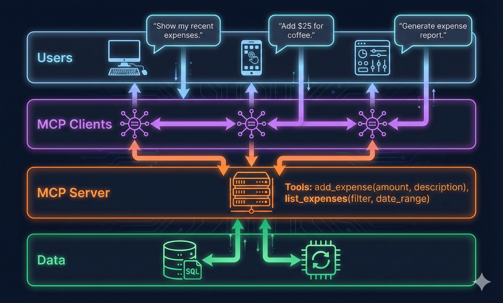

Discover how the Model Context Protocol (MCP) simplifies AI integrations. Learn why N×M integration problems become N+M solutions, and how to implement MCP in your AI applications.

What is the Model Context Protocol?
Model Context Protocol (MCP) is a standardized framework that creates a universal bridge between AI applications (like Claude, ChatGPT) and external services or data sources (databases, APIs, file systems).
Think of it as the USB-C of AI integrations—one standardized connector instead of dozens of proprietary cables.
The N×M Integration Problem
Before MCP, integrating multiple AI applications with multiple services meant building N × M custom bridges:
- 3 AI apps × 4 services = 12 custom integrations
- Each integration had different auth, error handling, retry logic
- Maintenance nightmare as services update APIs
- Security vulnerabilities multiply with each bridge
With MCP: Each AI app connects once to MCP. Each service implements MCP once. 3 + 4 = 7 total integrations instead of 12.
Architecture: Three Layers of MCP
MCP operates on a simple three-layer model:

Layer 1: Host (Applications)
The Host layer includes all user-facing AI applications:
- Claude / ChatGPT (for conversational AI)
- IDEs (VS Code with AI assistants)
- Custom AI applications (built with LangChain, LlamaIndex)
Hosts don't care about backend details. They just need to call tools and get results.
Layer 2: Client (MCP Client)
The MCP Client sits between the Host and Servers, managing:
- Connection initialization and capability negotiation
- Tool discovery ("What can I call?")
- Tool execution ("Call this tool with these parameters")
- Error handling and retries
- Security and authentication
/connection.png)
Layer 3: Server (External Services)
Servers are the actual integrations—GitHub API, database connections, file systems, etc.
Each server implements the MCP Server interface:
{
"server": {
"name": "github-server",
"version": "1.0.0",
"tools": [
{
"name": "list_repositories",
"description": "List all repositories for a user",
"inputSchema": {
"type": "object",
"properties": {
"username": { "type": "string" }
}
}
},
{
"name": "create_issue",
"description": "Create a new GitHub issue",
"inputSchema": { ... }
}
]
}
}
Protocol Lifecycle: Init → Operate → Shutdown
MCP follows a well-defined three-phase lifecycle:

Phase 1: Initialization
Client → Server: {
"jsonrpc": "2.0",
"id": 1,
"method": "initialize",
"params": {
"protocolVersion": "2024-11-05",
"capabilities": {...},
"clientInfo": {
"name": "my-app",
"version": "1.0"
}
}
}
Server → Client: {
"jsonrpc": "2.0",
"id": 1,
"result": {
"protocolVersion": "2024-11-05",
"capabilities": {...},
"serverInfo": {
"name": "github-server",
"version": "1.0"
}
}
}
Phase 2: Operation
Once initialized, the client can call tools repeatedly:
Client → Server: {
"jsonrpc": "2.0",
"id": 2,
"method": "tools/call",
"params": {
"name": "list_repositories",
"arguments": { "username": "torvalds" }
}
}
Server → Client: {
"jsonrpc": "2.0",
"id": 2,
"result": {
"content": [
{
"type": "text",
"text": "[List of repositories...]"
}
]
}
}
Phase 3: Shutdown
Client → Server: {
"jsonrpc": "2.0",
"id": 3,
"method": "close"
}
Tools vs Resources: The Two Pillars
MCP distinguishes between two types of capabilities:
/comparison diagram.png)
Tools: Modifications & Actions
Tools are callable functions that modify state or perform actions:
- ✍️ Writing files - `create_file`, `update_file`
- 📧 Sending messages - `send_email`, `post_slack`
- 💾 Database updates - `add_expense`, `update_record`
- ⚡ External actions - `create_issue`, `deploy_app`
Key property: Tools change state. Calling them multiple times produces different results (unless you're resetting state).
Resources: Data & Information
Resources are read-only data sources:
- 📄 File contents - `read_file`, `list_files`
- 👤 User profiles - `get_profile`, `list_users`
- 📊 Metrics & logs - `query_database`, `get_analytics`
- 📚 Documentation - `search_docs`, `get_schema`
Key property: Resources are safe to call repeatedly. The AI can fetch the same data multiple times without side effects.
Transport Mechanisms: STDIO vs HTTP
MCP supports two transport mechanisms:
/side-by-side.png)
STDIO: Local, Ultra-Fast
For local integrations (Host and Server on same machine):
- Communication: Standard input/output pipes
- Latency: <1ms (process-to-process)
- Use case: Development, single-machine deployments
- Security: Limited to same machine
HTTP: Remote, Distributed
For remote integrations (Host and Server on different machines):
- Communication: HTTP requests + Server-Sent Events (SSE)
- Latency: 20-100ms (network-dependent)
- Use case: Cloud deployments, third-party services
- Security: Full TLS support, authentication tokens
Real-World Example: Expense Tracker App
Let's build a simple MCP-enabled expense tracker:

Tools in Expense Tracker
{
"tools": [
{
"name": "add_expense",
"description": "Record a new expense",
"inputSchema": {
"type": "object",
"properties": {
"amount": { "type": "number" },
"category": { "type": "string" },
"description": { "type": "string" },
"date": { "type": "string" }
},
"required": ["amount", "category"]
}
},
{
"name": "list_expenses",
"description": "List all expenses",
"inputSchema": {
"type": "object",
"properties": {
"filter": { "type": "string" },
"limit": { "type": "integer" }
}
}
},
{
"name": "get_summary",
"description": "Get spending summary",
"inputSchema": {
"type": "object",
"properties": {
"period": { "type": "string", "enum": ["daily", "weekly", "monthly"] }
}
}
}
]
}
Workflow Example
User: "Add $50 for coffee"
MCP Client: Calls add_expense({
"amount": 50,
"category": "food",
"description": "coffee",
"date": "2026-01-26"
})
Server: Records in database, returns success
User: "How much did I spend this week?"
MCP Client: Calls get_summary({
"period": "weekly"
})
Server: Queries database, returns {"total": 250, "by_category": {...}}
Why MCP Matters (Now More Than Ever)
/context-engineering.png)
As AI applications become more sophisticated, integration complexity explodes. MCP solves this:
- 🔌 Plug-and-play integrations - Add any MCP server to any MCP client instantly
- 🔐 Security by design - Explicit tool definitions, rate limiting, audit logs
- ⚙️ Easier maintenance - Update one server spec instead of patching all clients
- 📈 Scalability - From hobby projects to enterprise deployments
- 🌍 Community ecosystem - Share servers across teams and organizations
Getting Started with MCP
Step 1: Choose Your Framework
- Python: Use `mcp` Python SDK
- Node.js: Use `@modelcontextprotocol/sdk`
- Other languages: Implement JSON-RPC directly
Step 2: Create Your First Server
from mcp.server import Server
server = Server(name="my-server")
@server.tool()
def get_user(username: str) -> str:
"""Get user profile"""
return f"User: {username}"
@server.tool()
def create_note(title: str, content: str) -> str:
"""Create a new note"""
return f"Note created: {title}"
if __name__ == "__main__":
server.run()
Step 3: Connect a Client
from mcp.client import Client
client = Client("my-server")
client.connect()
# Call tools
result = client.call_tool("get_user", {"username": "alice"})
print(result)
client.disconnect()
Resources & Further Reading
Official Documentation
Implementation
Want to learn more about AI engineering?
Get in Touch